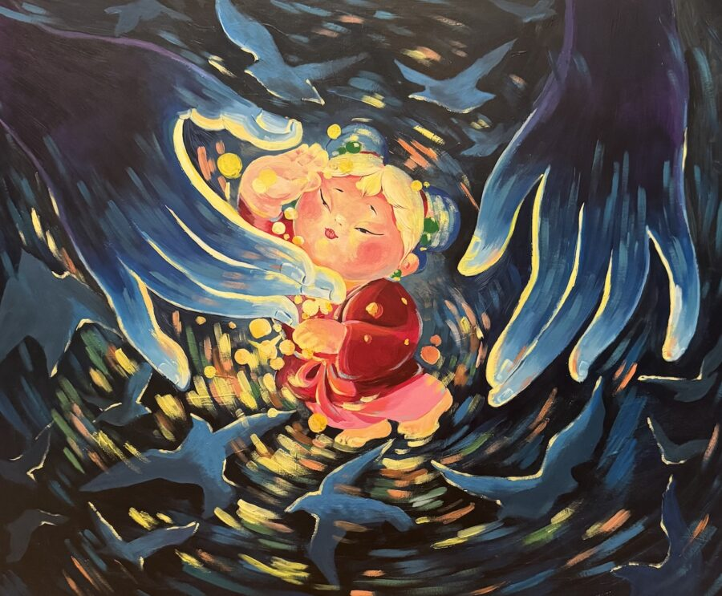

No More Parades: Interrupted Joy
“No More Parades: Interrupted Joy“ is a group exhibition featuring artwork that was originally intended to be included in an October 2025 parade but due to the heightened intensity surrounding ICE and “Operation Midway Blitz” in Chicago, the gallery made the decision to back out amid safety concerns. Determined to still bring the artwork to the public, the 20 x 24 foam board pieces created by local artists will be exhibited in the gallery January 16th to 31st, with an opening reception on Friday, Jan. 16th from 6 to 9pm. Works will also be available on the gallery’s website for the duration of the exhibition and can be viewed in person by appointment only.
Exhibiting artists include Trotter Alexander, Lindsey E. Bates, Daniel Wilson, Isamar Medina, Delisha, Darin Latimer, Roiz, Teresa Magaña, Mel Villareal, Amwooart, Danny J. Martinez, Lynn Tsan, Zor Zor Zor, Lo Marie, Zeye One, Gabi Bozeman, Crush Entity, Nathan Doty, Seanice Lenay, Lee Sunshine, Crystal Jennings, Josie Levin, Jess Timeless, Steven Zapiain, Emma Stoolmaker, Alec Espínola, Andrew the Rose Artist and A. Murphyao.
Thank you to BLICK Art Materials for donating art supplies, Chicago Shirt Prints for sponsoring the shirts and Cujo Dah for the design!